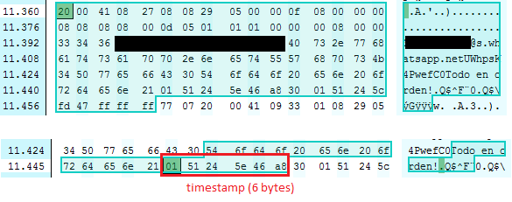
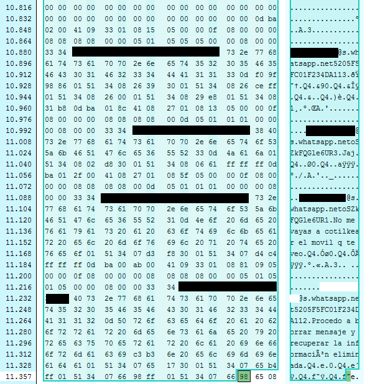
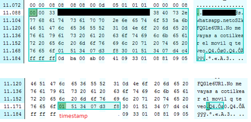
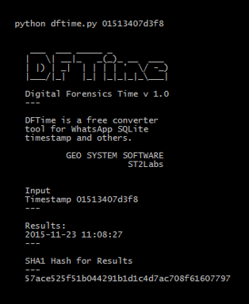
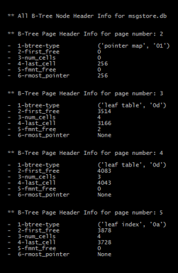
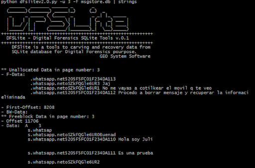

{kind=link}
En este artículo abordaré la recuperación de mensajes borrado en la
aplicación WhatsApp, como ya comente en la [parte
I](http://www.seguridadparatodos.es/2015/11/digital-forensics-of-android-whatsapp.html)
y
II,
la capacidad de recuperación de mensajes eliminados es inversamente
proporcional al periodo de tiempo transcurrido desde que se produjo el
hecho, así como a la intensidad de uso de la aplicación en dicho
periodo.
Es decir, cuanto mayor sea la intensidad y el tiempo transcurrido menor
es la probabilidad de recuperar la información.
**Recuperando mensajes eliminados de
WhatsApp - Recovery Data**
Si recordamos en la [segunda
parte](http://www.seguridadparatodos.es/2015/12/digital-forensics-of-android-whatsapp-p2.html),
el timestamp de un mensaje consta de 6 bytes y se encuentra justo a
continuación de los datos, tal y como se puede ver en la siguiente
imagen:
|  |
| ST2Labs 13 - Cell Data to Offset 11358 |
{kind=link}
Pero antes de ponernos manos a la obra y decodificar el timestamp, se
puede analizar la base de datos en busca de información eliminada, para
ello, se deben de examinar el espacio sin utilizar (unallocated), los
freeblock o incluso los freelist.
En las base de datos SQLite, existe la posibilidad de indicar que un
registro (cell record) ha sido eliminado marcando el mismo como
“freeblock” dentro de una página, además si se elimina una página
entera, se puede marcar como Freelist.
La información residual que queda en una base de datos cuando no se
sigue el estándar, es aquella que es eliminada desde la aplicación
(chat) y simplemente se elimina su “indexación” en la base de datos, es
decir, en aquel espacio que no esta asignado a ninguna función es
denominado unallocated, y puede contener información que previamente ha
sido eliminada, y que por tanto, no se encuentra indexada en la base de
datos.
Por tanto resumiendo, la información eliminada puede estar ubicada en:
- unallocated space
- freeblock
- freelist
Además, si la base de datos es configurada con “rollback”, puede existir
archivos WAL (Write-Ahead Log) o Journal, que permite guardar una copia
de seguridad de una página mientras esta se esta modificando y no ha
recibido un “commit”.
{kind=link}
Si existe el fichero db-wal o db-journal, es muy recomendable realizar
un análisis forense de dichos archivos, en busca de información
relevante. Si existen esto archivos, no se recomienda abrir la base de
datos con un visor de SQLite, ya que puede ejecutar un “commit”
pendiente y borrar por completo toda la información que pudiera
contener.
En nuestro caso, no disponemos de archivo db-wal, por lo que procedemos
a analizar la información contenida en el archivo y que no esta
consideraba como “válida”, es decir, analizaremos todos los freeblock,
unallocated y freelist que existan.
Realizar esta tarea de forma manual es bastante tediosa, ya que para
cada página se debe de extraer la información que existe entre la ultima
“celda - registro” y el final de Cell Pointer Array (como recordáis del
artículo anterior”.
Pero además, puede exisitr espacio “unallocated” entre celdas, y /o
freeblock (son aquellas celdas que han sido marcadas como disponibles)
al realizar la acción de eliminar mensajes.
Vamos con un ejemplo:
Abrimos la base de datos con un editor hexadecimal y analizamos el
contenido de toda la página 3, ya que consideramos que es la más
indicada al ser la que contiene la información de “mensajes”. Si se ha
eliminado algún mensaje debe de ser de esta página.
Datos de interés para la página 3, según la información analizada en el
articulo 2:
- Offset page 3: 8192
- Ultima celda (registro) Offset: 11358
- Offset cell pointer: 8200
- Size Cell Pointer: 8 bytes
Por tanto, el espacio “unallocated” entre la utlima celda (registro) y
el final de Cell Pointer Array se puede calcular tal que así:
Ini unallocated Offset = 8208
Size = 11358 - 8208 = 3150 bytes
Con ayuda de un editor hexadecimal, se obtiene:
|  |
| ST2Labs 14 - Unallocated database pace for page 3 |
{kind=link}
Se puede observar que existen varios mensajes como información residual
en la página 3 de la base de datos, el **key_id (identificador único de
cada mensaje) esta compuesto por un “hash” y un número de secuencia,**
además con el timestamp de los mensajes se puede realizar el timeline
correspondiente.
Por ejemplo, se procede a analizar la información para el mensaje:
|  |
| ST2Labs 15 - Recovery Delete Message - Whatsapp
No existe una forma normalizada de finalizar un mensaje, para calcular el tamaño exacto del mensaje, se debe de decodificar el cell header y el payloda header, sin embargo, para los datos que han sido eliminado (no están indexados) no se conoce el offset de los registro eliminados, por lo que no se puede a priori determinar el inicio de la celda, salvo mediante técnica de prueba y error.
Por ello, obtener el timetamp, es coger los 6 bytes seguido al final del mensaje, para el caso de ejemplo, acaba sin ".", en otros casos puede que haya que probar más de una vez, por si el carácter "." forma parte del mensaje de texto o no.
|
{kind=link}
En nuestro caso de ejemplo:
Timestamp: 01513407d3f8
Utilizando DFTime, la herramienta para convertir el timestamp a
Fecha y Hora, se obtiene:
|  |
| ST2Labs 16 - DFTime - Timestamp converter tools |
{kind=link}
Sin embargo, para asegurarse que no existe ningún otro mensaje eliminado
disperso por la base de datos, se debe de analizar los freeblock dentro
de la página 3.
La información, si existen freeblock o no, se encuentra dentro de la
cabecera de cada una de las páginas, con ayuda de la herramienta
DFSLite, se puede consultar todas y cada una de las cabeceras de las
páginas de la base de datos, con el comando -B.
|  |
| ST2Labs 17 - Page header - freeblock |
{kind=link}
Se analiza la información, y para la página 3 se detecta que existen 2
freeblock, donde el offset del primer freeblock es 3514 relativo a al
offset de la página.
Se utiliza DFSLite, con la opción -u para obtener la información
contenida dentro de los freeblock, y unallocated, tal que:
|  |
| ST2Labs 18 - All messages recovery |
{kind=link}
Se ha utilizado strings para visualizar mejor los mensajes, pues la
herramienta muestra la información en bruto (raw data). No obstante,
para determinar el timestamp de los mensajes y montar un “timeline”, se
debe de abrir el archivo en hexadecimal y analizar de forma manual, tal
y como se ha visto en este artículo.
Para descubrir todos los mensajes se deberá de analizar todas las
páginas de la base de datos, por tanto cuanto mayor sea la base de
datos, mas elaborado y mayor será el tiempo que se tardará en obtener
los resultados.
Espero que haya sido de utilidad, a continuación os dejo el enlace al
repositorio donde voy subiendo las herramientas.
DFTime Tools
Se puede descargar la herramienta desde el repositorio oficial de
ST2Labs (https://github.com/ST2Labs/DFIR/tree/master/SQLite)
#ST2Labs
#GEOSystemSoftware
www.st2labs.com | www.seguridadparatodos.es
PD: El análisis de las freelist page os lo dejo como “trabajo” para
casa. :) Al igual que realizar un análisis manual de los freeblock.